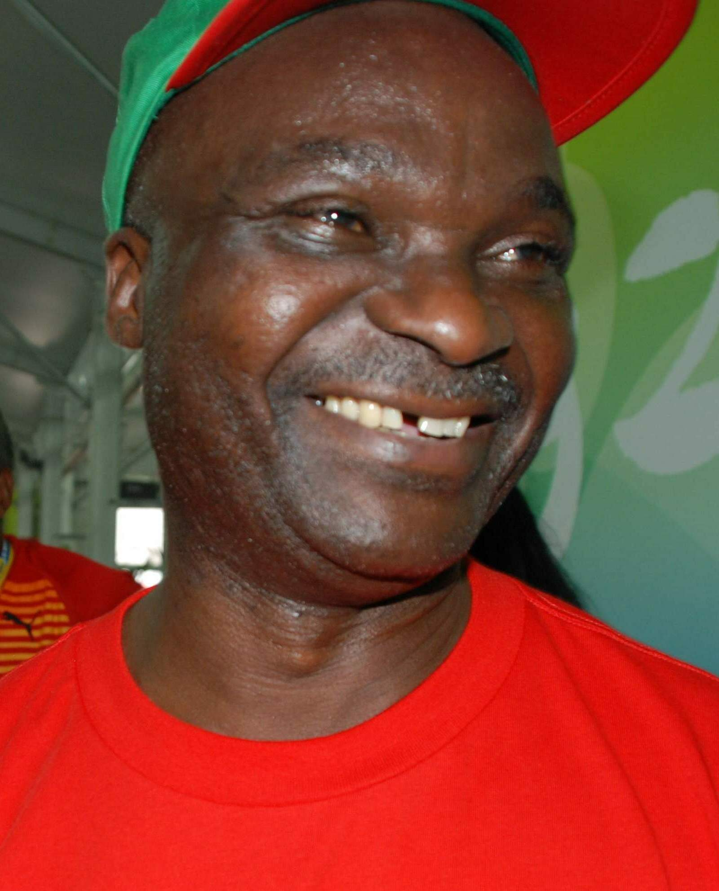
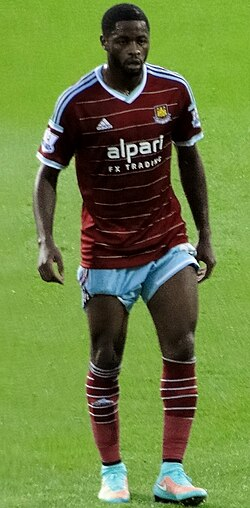

| Nombre | Posición | Edad | Bibliografía | Portada |
|---|---|---|---|---|
| Roger Milla | Delantero | 72 |
Leyenda de Camerún, famoso por sus goles y celebraciones en el Mundial de 1990. Considerado uno de los mejores futbolistas africanos de la historia. |
 |
| Samuel Eto’o | Delantero | 44 |
Máximo goleador histórico de Camerún. Brilló en Barcelona, Inter de Milán y Chelsea. Ganador de múltiples títulos y referente africano. |
|
| Rigobert Song | Defensa central | 49 |
Capitán histórico de Camerún, disputó 4 Copas del Mundo y múltiples Copas Africanas. Actualmente es seleccionador nacional. |
|
| Patrick Mboma | Delantero | 53 |
Goleador y referente en la Copa Africana de 2000. Reconocido por su potencia y capacidad anotadora con los Leones Indomables. |
|
| Thomas N’Kono | Portero | 69 |
Portero histórico, ídolo del Espanyol y modelo para Gianluigi Buffon. Fue pieza clave en los Mundiales de los 80 y 90. |
|
| Joseph-Antoine Bell | Portero | 70 |
Considerado uno de los mejores porteros africanos de todos los tiempos. Defendió la camiseta de Camerún en 3 Mundiales. |
|
| François Omam-Biyik | Delantero | 58 |
Autor del gol histórico contra Argentina en el Mundial 1990. Figura clave en la mejor generación del fútbol camerunés. |
|
| Pierre Webó | Delantero | 43 |
Ex delantero con gran paso en la liga turca y española. Aportó goles y experiencia en varias Copas Africanas. |
|
| Alexandre Song | Mediocentro | 38 |
Mediocampista con paso en el Arsenal y Barcelona. Conocido por su fuerza física y capacidad defensiva. |
 |
| Joël Matip | Defensa central | 34 |
Jugador del Liverpool, campeón de Champions League en 2019. Reconocido por su seguridad defensiva y juego aéreo. |
|
| André Onana | Portero | 29 |
Actual arquero del Manchester United. Destaca por sus reflejos y juego con los pies, considerado de los mejores de África. |
|
| Vincent Aboubakar | Delantero | 33 |
Capitán actual de Camerún. Goleador de la Copa Africana 2017 y referente ofensivo del equipo nacional. |